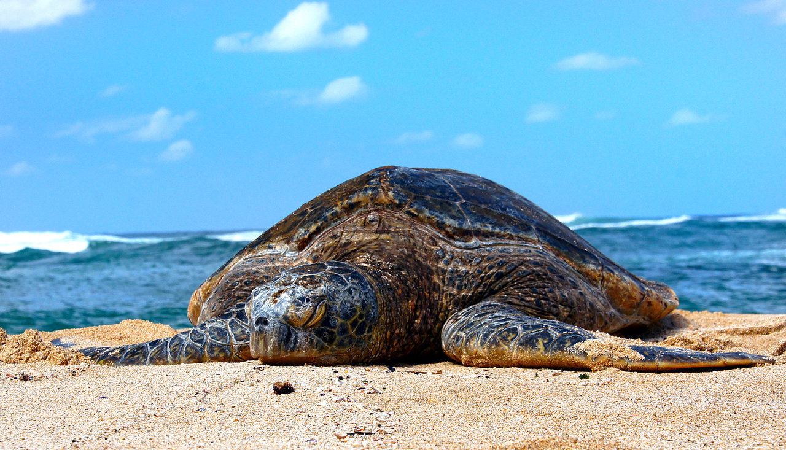

Plastic pollution: Sea turtles often mistake plastic bags and other debris for food, which can lead to digestive problems, suffocation, and death. To protect marine turtles from plastic pollution, reduce plastic use, properly dispose of plastic trash, and raise awareness. Here are some things you can do to help prevent plastic waste from harming sea turtles:
- Improperly disposed plastic waste can end up in the ocean and harm sea turtles. We can reduce plastic pollution by disposing of plastic waste properly, such as recycling or throwing it away in a trash can.
- Join or organize local beach cleanups to eliminate plastic waste and other rubbish. These cleanups assist to keep turtles from eating or becoming entangled in plastic.
- Support initiatives to decrease plastic pollution at the local, national, and international levels. Support laws and policies that encourage plastic bans, better waste management systems, and more producer accountability.
How to prevent this

Climate change: Rising sea temperatures can disrupt sea turtle nesting patterns, while ocean acidification can harm their food sources.Additionally Rising temperatures raise the temperature of the sand, which only allows for the birth of females.
- By taking public transportation, cycling or walking instead of driving, adopting energy-efficient appliances, and conserving electricity, you may lessen your carbon footprint.
- Inform yourself and others on how climate change is affecting marine species.
- Support local and international efforts to save sea turtles by donating or volunteering.
How to prevent this

Fishing gear:The most serious risk to young and adult sea turtles in the ocean is accidental capture during fishing operations. The biggest harm is done by driftnets and gillnets. Longlines are extremely harmful for leatherbacks since they are typically fished in the open ocean, where leatherbacks can be found. They aren't normally looking for food on the lines, but because to their size, they get snagged on hooks as they swim past.
- Learn about local fishing restrictions and recommendations for protecting marine turtles. These restrictions frequently require the use of TEDs or other turtle-friendly equipment in specified locations or during specific seasons.
- Raise awareness about the need of sea turtle conservation among fishermen and fishing boat crew members. Encourage the use of suitable ways for releasing inadvertently acquired turtles and encourage training on the use of TEDs and other turtle-friendly equipment.
- Choose fishing gear that is intended to minimize encounters with sea turtles. Turtle excluder devices (TEDs) are critical gadgets that may be fitted to fishing nets to help turtles to escape when they are mistakenly trapped. Turtles may swim out of the net utilizing TEDs via an aperture built particularly for them.
How to prevent this
Poaching Sea turtles are hunted for their meat, eggs, and shells. This can reduce their populations and disrupt their ecosystems. Poachers destroy more than 90% of sea turtle nests on unprotected beaches in order to sell the eggs in the illicit wildlife trade. Locals and fishermen search the beaches at night for nesting turtles, and when they discover one, they instantly take all of the eggs.
- Propose tougher rules and regulations to protect sea turtles from poaching. Collaborate with local governments, conservation groups, and lawmakers to enforce current laws and impose harsher punishments for poaching infractions.
- Report any cases of sea turtle poaching or suspicious activity to local authorities, wildlife enforcement agencies, or sea turtle conservation organizations immediately. Give as much information as you can to help with investigations and enforcement actions.
- Contribute to or volunteer for organizations that actively fight sea turtle poaching. To deter unlawful actions, these groups frequently use anti-poaching patrols, surveillance systems, and intelligence collection.
How to prevent this
Kosgoda Turtle Hatchery
Bentota Turtle Hatchery